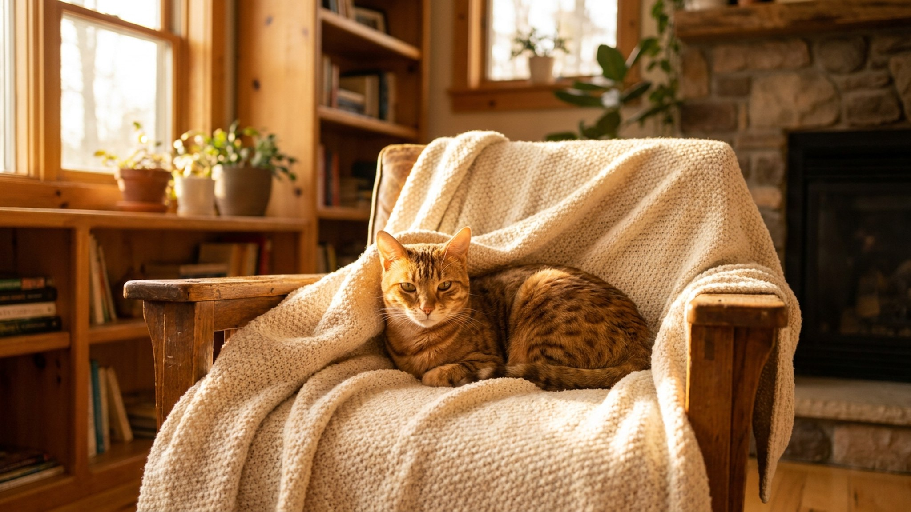

Сококе ходит за хозяином по квартире, встречает у двери и скучает в одиночестве — поведение, которого не ожидаешь от кошки. Это одна из редчайших пород в мире: зарегистрированных особей меньше нескольких тысяч. Если вы хотите кошку с глубокой привязанностью и активным характером — разберём, подходит ли вам Сококе и что ей нужно для счастья.
🐾 Ваш питомец — сококе?
Заведите профиль в AnimaLife: приложение запомнит породу, возраст и вес и будет подсказывать по уходу именно для неё. Вопросы AI-ветеринару — круглосуточно и бесплатно.
Завести профиль → Завести в MAX →
У вас iPhone? AnimaLife есть в App Store
Порода происходит из прибрежных лесов Кении — района Арабуко-Сококе. Местные жители заметили диких полосатых кошек с необычным окрасом ещё в 1970-х. Датская исследовательница Йени Слот зафиксировала их первой, позже порода была признана TICA и FCI.
Сококе по сей день остаётся редкостью: плановое разведение ведётся в нескольких питомниках Европы и Скандинавии. В России котята появляются единицами в год. Именно это делает её предметом интереса среди ценителей — и одновременно поводом тщательно взвесить покупку.
Сококе — порода с выраженной социальностью. Она выбирает одного-двух «своих» людей и держится рядом: сопровождает по квартире, интересуется, чем вы заняты, и явно расстраивается, когда хозяин уходит надолго.
При этом Сококе сохраняет кошачью самостоятельность: не требует постоянного тисканья и сама решает, когда хочет на ручки.
Сококе — охотничья порода с мощными задними ногами и лёгким телосложением. Прыгает высоко, лазит охотно, в покое сидеть не любит.
Тикированный окрас Сококе — визитная карточка породы. Каждый волосок окрашен полосами, создавая рисунок, похожий на кору дерева или мрамор. Оттенки — от тёплого коричнево-золотого до холодного серо-пепельного.
Шерсть короткая, плотная, без подшёрстка — уход минимальный:
Сококе впишется в дом, где есть время на общение и место для активности. Это не кошка «для занятого одиночки, которому нужно фоновое животное».
Материал носит информационный характер и не заменяет очную консультацию ветеринара.
🐾 У вас сококе?
AnimaLife соберёт уход под породу: к каким болезням есть склонность, что проверять по возрасту, чем кормить и когда пора к врачу. Бесплатно, прямо в мессенджере.
Собрать план ухода → Собрать в MAX →
У вас iPhone? AnimaLife есть в App Store
🐾 Понравился разбор?
Подпишитесь на канал — каждый день разбираем по одному тревожному симптому у кошек и собак: что в пределах нормы, а когда пора к врачу. Подпишитесь, чтобы не пропустить разбор, который может спасти здоровье вашего питомца.